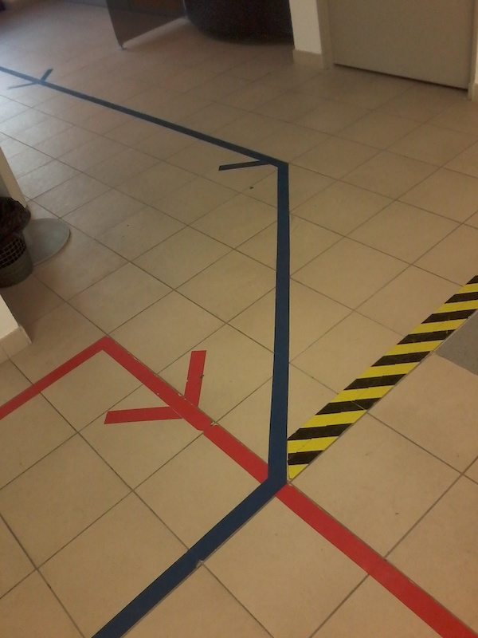

Colored paths on the floor have been used in public spaces to direct crowds. It is not clear how usable they are. The crowd has hidden them by just being there. Color coding does not conform to accessibility requirements. Other factors may command our attention. The shapes may force unnatural turns: not only the red arrow in the image creates a sudden 90⁰ right turn, the blue trajectory too could be smoother. Superposition has no clear meaning (does it suggest priority, give way, when people following the respective lines meet?) And there is an unwelcome interaction with other signs drawn on the floor, such as the black-yellow stripe, normally interpreted as a no-trespassing boundary, and that ungrammatically ends here at the intersection of the two other lines.
 Paris, May 30th, 2018. Image credit: RC.Previous Essay
Next Essay